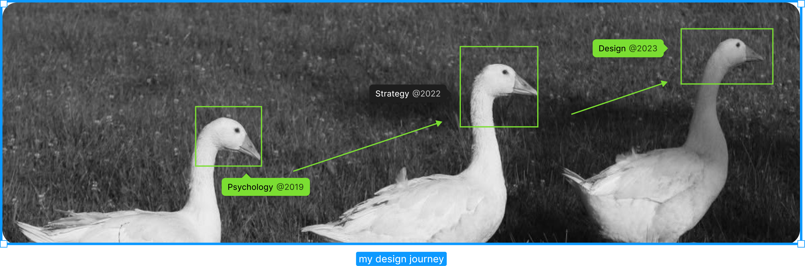
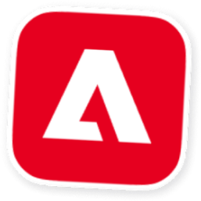
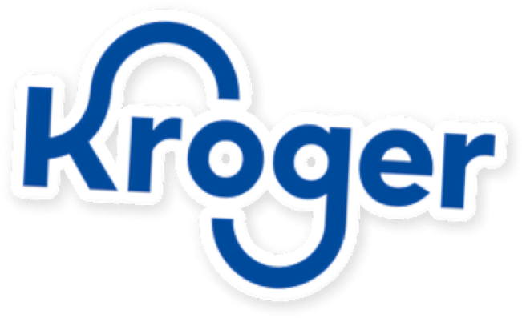
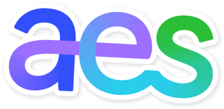

Hello, I’m Sixian (“si-shen”). I trained in psychology to understand people, now I build B2B SaaS and AI products 0→1.





Work Experience
Leveraged AI to create a design system from 0→1 based on MVP screens, saving the team over 40+ hours
Designed workflows for both mobile and desktop experience for an education platform
Reshaped the IA and homepage design of the Undergraduate Education website, leading to 20% increase in conversion
Redesigned the customer portal of 960K users, shortening key workflow by 35%
Conducted 10+ interviews with client internal teams, identifying three opportunities to boost team collaboration and efficiency
Leveraged survey analysis, voice of customer (VOC) results and sales data of 40K users, providing suggestion on future product strategy